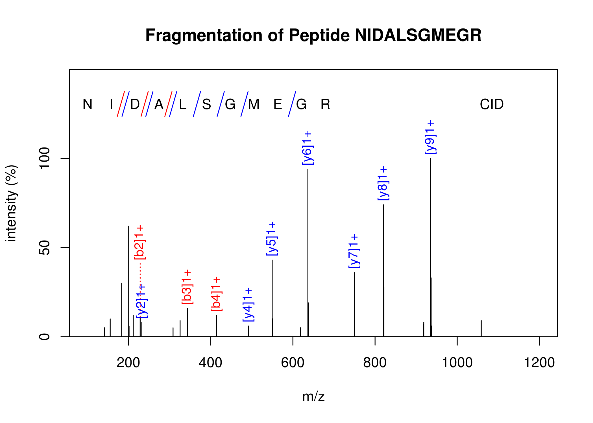

OrgMassSpecR
OrgMassSpecR is an extension for the R statistical computing language. It contains functions to assist with organic/biological mass spectrometry data analysis. Mass spectral libraries are available as companion packages.
This project is under continuous development. The stable version of OrgMassSpecR is on CRAN. The development version of OrgMassSpecR is on GitHub. The mass spectral library packages and stand-alone files (PDF reports and MSP files) are available on the GitHub Mass Spectral Libraries page.
OrgMassSpecR examples are in the package vignette.
Functions
General
MolecularWeight: Calculate the molecular weight of an organic molecule.
MonoisotopicMass: Calculate the monoisotopic mass or monoisotopic m/z value of an organic molecule.
IsotopicDistribution: Simulate the isotopic distribution of an organic molecule.
ListFormula: Convert a character string representing an elemental formula to a list representing the elemental formula.
DrawChromatogram: Plot a chromatogram, color the area under specified peak(s), and calculate the peak area(s).
SpectrumSimilarity: Generate a head-to-tail plot of two mass spectra and calculate a similarity score.
ConvertConcentration: Change the unit basis for a sample concentration, such as ng/g wet weight to ng/g dry weight, or pg/g lipid weight to pg/g wet weight.
RetentionIndex: Calculate the the non-isothermal gas chromatographic retention index of a target compound.
DeadVolume: Calculate the internal volume of a defined length of tubing.
FlowTime: Calculate the time required for a liquid to flow through a defined length of tubing.
Spectral Libraries
LibraryReport: Generate a PDF report of an OrgMassSpecR mass spectral library, or view spectra within R. Each spectral library package has its own LibraryReport function.
ReadMspDirectory: Reads in all .msp files within a directory and makes a single concatenated data frame of m/z values and intensities.
ReadMspFile: Reads in a .msp file and makes a data frame of m/z values and intensities.
WriteMspFile: Writes a single .msp file from a data frame of m/z values and intensities of multiple mass spectra.
Proteins/Peptides
Digest: Cleave an amino acid sequence (a protein or peptide) according to enzyme specific rules and calculate the precursor ion m/z values.
FragmentPeptide: Determine the b- and y-ions or c- and z-ions produced by the fragmentation of a peptide by tandem mass spectrometry.
ConvertPeptide: Convert single amino acid codes to an elemental formula or three letter codes.
PeptideSpectrum: Plot a peptide fragmentation mass spectrum, with the b- and y-ions or c- and z-ions identified.
IsotopicDistributionN: Simulate the isotopic distribution of a peptide with varying amounts of nitrogen-15 incorporation.
IsotopicDistributionHDX: Simulate the isotopic distribution of a peptide undergoing hydrogen-deuterium exchange.
ExchangeableAmides: Determine the number of backbone amide hydrogens given a protein/peptide sequence. Used in hydrogen-deuterium exchange experiments.
References
Introductory Manuscripts
Mass Spectral Libraries
Hoh E, Dodder NG, Lehotay SJ, Pangallo KC, Reddy CM, Maruya KA. Nontargeted Comprehensive Two-Dimensional Gas Chromatography/Time-of-Flight Mass Spectrometry Method and Software for Inventorying Persistent and Bioaccumulative Contaminants in Marine Environments. Environ Sci Technol. 2012;46: 8001-8008. [Link]
Calculation of MRM Transitions and Isotopic Distributions of Nitrogen-15 Labeled Peptides
Liao W-L, Heo G-Y, Dodder NG, Pikuleva IA, Turko IV. Optimizing the Conditions of a Multiple Reaction Monitoring Assay for Membrane Proteins: Quantification of Cytochrome P450 11A1 and Adrenodoxin Reductase in Bovine Adrenal Cortex and Retina. Anal Chem. 2010;82: 5760-5767. [Link]
Manuscripts Using or Referring to OrgMassSpecR
Mackintosh SA, Dodder NG, Shaul NJ, Aluwihare LI, Maruya KA, Chivers SJ, et al. Newly Identified DDT-Related Compounds Accumulating in Southern California Bottlenose Dolphins. Environ Sci Technol. 2016;50: 12129–12137. [Link]
Gago-Ferrero P, Schymanski EL, Bletsou AA, Aalizadeh R, Hollender J, Thomaidis NS. Extended Suspect and Non-Target Strategies to Characterize Emerging Polar Organic Contaminants in Raw Wastewater with LC-HRMS/MS. Environ Sci Technol. 2015;49: 12333-12341. [Link]
ElBashir R, Vanselow JT, Kraus A, Janzen CJ, Siegel TN, Schlosser A. Fragment Ion Patchwork Quantification for Measuring Site-Specific Acetylation Degrees. Anal Chem. 2015;87: 9939-9945. [Link]
Shaul NJ, Dodder NG, Aluwihare LI, Mackintosh SA, Maruya KA, Chivers SJ, et al. Nontargeted Biomonitoring of Halogenated Organic Compounds in Two Ecotypes of Bottlenose Dolphins (Tursiops truncatus) from the Southern California Bight. Environ Sci Technol. 2015;49: 1328-1338. [Link]
Schollee JE, Schymanski EL, Avak SE, Loos M, Hollender J. Prioritizing Unknown Transformation Products from Biologically-Treated Wastewater Using High-Resolution Mass Spectrometry, Multivariate Statistics, and Metabolic Logic. Anal Chem. 2015;87: 12121-12129. [Link]
Gatto L, Christoforou A. Using R and Bioconductor for proteomics data analysis. Biochimica et Biophysica Acta (BBA) - Proteins and Proteomics. 2014;1844: 42-51. [Link]
Campbell MP, Nguyen-Khuong T, Hayes CA, Flowers SA, Alagesan K, Kolarich D, et al. Validation of the curation pipeline of UniCarb-DB: Building a global glycan reference MS/MS repository. Biochimica et Biophysica Acta (BBA) - Proteins and Proteomics. 2014;1844: 108-116. [Link]
Dittwald P, Vu TN, Harris GA, Caprioli RM, Van de Plas R, Laukens K, et al. Towards automated discrimination of lipids versus peptides from full scan mass spectra. EuPA Open Proteomics. 2014;4: 87-100. [Link]
Zushi Y, Hashimoto S, Fushimi A, Takazawa Y, Tanabe K, Shibata Y. Rapid automatic identification and quantification of compounds in complex matrices using comprehensive two-dimensional gas chromatography coupled to high resolution time-of-flight mass spectrometry with a peak sentinel tool. Analytica Chimica Acta. 2013;778: 54-62. [Link]
Broeckling CD, Heuberger AL, Prince JA, Ingelsson E, Prenni JE. Assigning precursor-product ion relationships in indiscriminant MS/MS data from non-targeted metabolite profiling studies. Metabolomics. 2013;9: 33-43. [Link]
Tang Z, Wu M, Li Y, Zheng X, Liu H, Cheng X, et al. Absolute quantification of NAD(P)H:quinone oxidoreductase 1 in human tumor cell lines and tissues by liquid chromatography-mass spectrometry/mass spectrometry using both isotopic and non-isotopic internal standards. Analytica Chimica Acta. 2013;772: 59-67. [Link]
Wang M, Chen J, Turko IV. 15N-Labeled Full-Length Apolipoprotein E4 as an Internal Standard for Mass Spectrometry Quantification of Apolipoprotein E Isoforms. Anal Chem. 2012;84: 8340-8344. [Link]
Wang M, Heo G-Y, Omarova S, Pikuleva IA, Turko IV. Sample Prefractionation for Mass Spectrometry Quantification of Low-Abundance Membrane Proteins. Anal Chem. 2012;84: 5186-5191. [Link]
Lowenthal MS, Gasca-Aragon H, Schiel JE, Dodder NG, Bunk DM. A quantitative LC-MS/MS method for comparative analysis of capture-antibody affinity toward protein antigens. Journal of Chromatography B. 2011;879: 2726-2732. [Link]
Charvet C, Liao W-L, Heo G-Y, Laird J, Salomon RG, Turko IV, et al. Isolevuglandins and Mitochondrial Enzymes in the Retina. J Biol Chem. 2011;286: 20413-20422. [Link]
Liao W-L, Heo G-Y, Dodder NG, Reem RE, Mast N, Huang S, et al. Quantification of Cholesterol-Metabolizing P450s CYP27A1 and CYP46A1 in Neural Tissues Reveals a Lack of Enzyme-Product Correlations in Human Retina but Not Human Brain. J Proteome Res. 2010;10: 241-248. [Link]
Examples
Halogenated Isotopic Distributions
The characteristic isotopic distributions of bromine and chlorine atoms can aid the interpretation of mass spectra.
Bromine Isotopic Distributions (PDF)
Chlorine Isotopic Distributions (PDF)
Bromine + Chlorine Isotopic Distributions (PDF)
Example Graphics
Simulated isotopic distributions of a peptide with varying nitrogen-15 incorporation. Function IsotopicDistributionN.
Highlighted peaks. Function DrawChromatogram.
Peptide fragmentation mass spectrum. Function PeptideSpectrum.
Spectrum similarity. Function SpectrumSimilarity.